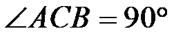
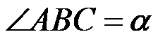
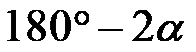
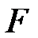
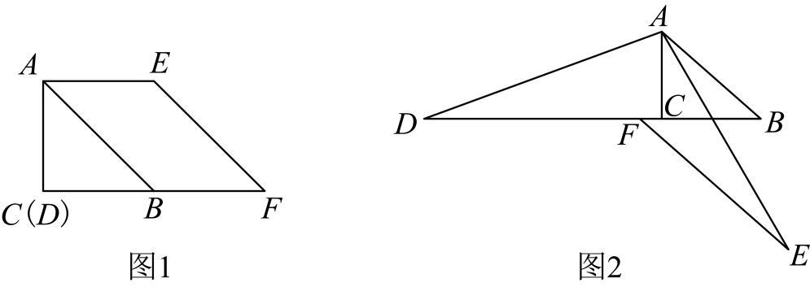
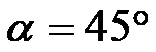

2025年北京市中考数学真题 · 数学解答题 第27题27. 在中，，，点在射线上，连接，将线段绕点逆时针旋转得到线段（点不在直线上），过点作，交直线于点．（1）如图1，，点与点重合，求证：；（2）如图2，点，都在的延长线上，用等式表示与的数量关系，并证明．
 在射线
在射线 上，连接，将线段绕点
上，连接，将线段绕点 逆时针旋转
逆时针旋转 不在直线
不在直线 上），过点作，交直线于点与点重合，求证：；，都在的延长线上，用等式表示与的数量关系，并证明．
上），过点作，交直线于点与点重合，求证：；，都在的延长线上，用等式表示与的数量关系，并证明．